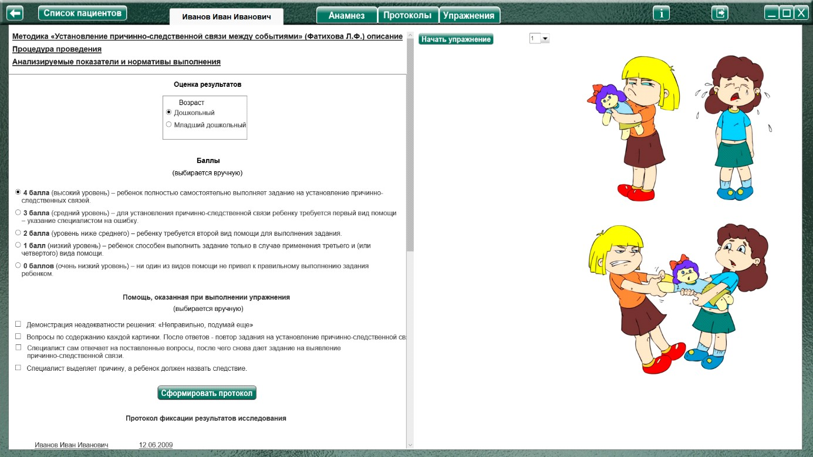
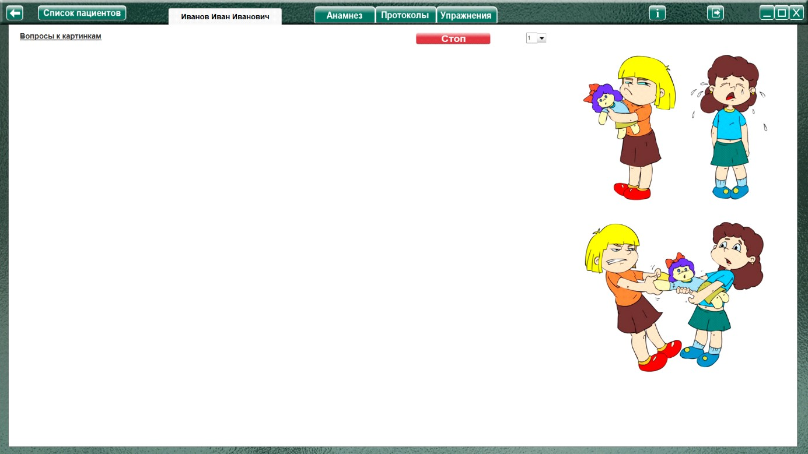
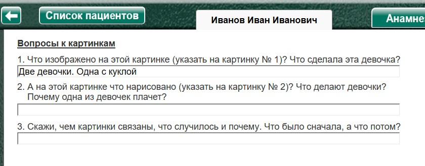

- Первая серия:
1) девочка отбирает куклу у другой девочки;
2) обиженная девочка плачет, а провинившаяся девочка не хочет отдавать куклу.
- Вторая серия:
1) мальчик сидит с удочкой на берегу реки;
2) мальчик показывает удивленной маме пойманную рыбу.
- Третья серия:
1) мальчики бегают с сачками по лугу за бабочками;
2) мальчики поймали сачками друг друга.
Процедура проведения.
Специалист располагает перед ребенком пару сериационных картинок и говорит:
«Внимательно посмотри на эти картинки. Они связаны между собой. Скажи, чем они связаны, что случилось и почему. Что было сначала? А что случилось потом?».
Серии предъявляются последовательно.
Анализируемые показатели и нормативы выполнения
Оценка результатов
Каждая серия оценивается отдельно.
4 балла (высокий уровень) – ребенок полностью самостоятельно выполняет задание на установление причинно-следственных связей.
3 балла (средний уровень) – для установления причинно-следственной связи ребенку требуется первый вид помощи – указание экспериментатором на ошибку.
2 балла (уровень ниже среднего) – ребенку требуется второй вид помощи для выполнения задания.
1 балл (низкий уровень) – ребенок способен выполнить задание только в случае применения третьего и (или четвертого) вида помощи.
0 баллов (очень низкий уровень) – ни один из видов помощи не привел к правильному выполнению задания ребенком.
Баллы по каждой серии суммируются. Таким образом, максимальная сумма баллов по трем сериям данной методики составляет 12 баллов.
Группы детей |
Возраст |
Баллы |
Нормально развивающиеся дети. |
Дошкольный |
8,5-11 |
Младший школьный |
9-12 |
|
Дети с задержкой психического развития. |
Дошкольный |
4,5-9 |
Младший школьный |
4,5-10 |
|
Дети с умственной отсталостью. |
Дошкольный |
0-6 |
Младший школьный |
3-7 |
Нормально развивающиеся дети как дошкольного, так и младшего школьного возраста в зависимости от уровня интеллектуального развития демонстрируют высокий и средний
уровни выполнения заданий каждой серии, т.е. они выполняют задание самостоятельно или при использовании стимулирующего вида помощи. В зависимости от уровня развития речи, от
эмоциональной захваченности сюжетом картинок, дети данной группы, устанавливая связь между событиями, изображенными на картинках, отвечают развернутыми предложениями или
ограничиваются односложными ответами. Эмоциональные реакции и содержание ответов свидетельствует о наличии у нормально развивающихся детей чувства юмора. Так, они понимают комичность ситуации в третьей серии. Некоторые дети при выполнении задания, кроме установления причинно-следственной связи между событиями, склонны описывать, интерпретировать, а в ряде случаев положительно или отрицательно оценивать эмоциональные состояния персонажей картинок.
Дети с ЗПР, начиная с дошкольного возраста, способны улавливать связь между событиями, правильно устанавливать последовательность картинок, однако не всегда склонны выделять
причину и следствие. Они описывают действия персонажей, но не склонны интерпретировать их поступки и, тем более, их эмоциональные состояния. Таким образом, дошкольники с ЗПР
демонстрируют уровни выполнения задания ниже среднего и низкий.
Младшие школьники с ЗПР демонстрируют более высокий уровень сформированности умения устанавливать причинно-следственные связи, чем дошкольники (средний и ниже среднего). Однако, в отличие от нормально развивающихся детей, все дети с ЗПР не проявляют стремления интерпретировать события, изображенные на картинках, и не склонны вчувствоваться в эмоциональный мир героев.
Дети с умственной отсталостью в дошкольном возрасте не всегда способны улавливать связь между картинками, воспринимают одних и тех же персонажей, изображенных на разных картинках, как разных людей, показывая очень низкий, реже низкий уровень выполнения задания. Так, давая описание картинок во второй серии, дошкольники данной группы говорят: «Этот мальчик рыбу ловит, а этот мальчик маме рыбу принес». При владении фразовой речью дети способны отвечать на первый и второй вопросы по каждой серии, однако, как правило, неадекватно отвечают на третий вопрос, направленный на выделение причины и следствия.
Младшие школьники с умственной отсталостью правильно определяют последовательность картинок, способны к выделению причины и следствия, однако не склонны интерпретировать поступки персонажей, не проявляют интереса к их эмоциональным состояниям, не понимают комичности ситуации в третьей серии.
Виды помощи
1. Если ребенок неправильно установил причинно-следственную связь между событиями, изображенными на картинке, экспериментатор дает ему возможность откорректировать свой ответ: «Неправильно, подумай еще».
2. Экспериментатор задает вопросы по содержанию каждой картинки (что изображено на картинках, чем похожи картинки, что между ними общего и т.п.). После того, как ребенок ответил на все вопросы, экспериментатор снова дает задание на установление причинно-следственной связи между событиями, изображенными на картинке.
3. Экспериментатор сам отвечает на поставленные вопросы, после чего снова дает задание на выявление причинно-следственной связи.
4. Психолог выделяет причину, а ребенок должен назвать следствие.
Вопросы к первой серии картинок:
1. Что изображено на этой картинке (указать на картинку № 1)? Что сделала эта девочка?
2. А на этой картинке что нарисовано (указать на картинку № 2)? Что делают девочки? Почему одна из девочек плачет?
3. Скажи, чем картинки связаны, что случилось и почему. Что было сначала, а что потом?
Вопросы ко второй серии картинок:
1. Что изображено на этой картинке (указать на картинку № 1)? Что делает этот мальчик?
2. А на этой картинке что нарисовано (указать на картинку № 2)? Кому мальчик показал рыбу? Почему мама удивилась?
3. Скажи, как картинки связаны, что между ними общего? Что было сначала, а что потом?
Вопросы к третьей серии картинок:
1. Что изображено на этой картинке (указать на картинку № 1)? Что делают мальчики? Для чего им нужен сачок?
2. А на этой картинке что нарисовано (указать на картинку № 2)? Кого поймали мальчики?
3. Скажи, как картинки связаны, что между ними общего? Что было сначала, а что потом?
Оценка результатов
Баллы
- 4 балла (высокий уровень) – ребенок полностью самостоятельно выполняет задание на установление причинно-следственных связей.
- 3 балла (средний уровень) – для установления причинно-следственной связи ребенку требуется первый вид помощи – указание экспериментатором на ошибку.
- 2 балла (уровень ниже среднего) – ребенку требуется второй вид помощи для выполнения задания.
- 1 балл (низкий уровень) – ребенок способен выполнить задание только в случае применения третьего и (или четвертого) вида помощи.
- 0 баллов (очень низкий уровень) – ни один из видов помощи не привел к правильному выполнению задания ребенком.
Виды возможной помощи:
- Возможность откорректировать ответ: «Неправильно, подумай еще»
- Вопросы по содержанию каждой картинки. После ответов - снова задание на установление причинно-следственной связи.
- Специалист сам отвечает на поставленные вопросы, после чего снова дает задание на выявление причинно-следственной связи.
- Специалист выделяет причину, а ребенок должен назвать следствие.
Протокол фиксации результатов исследования
_________________________________ _______________
ФИО Дата рождения
Методика |
Установление причинно-следственной связи между событиями |
|||||
Автор методики (адаптации, модификации) |
Фатихова Л.Ф. |
|||||
Цель: |
изучение уровня развития способности устанавливать причинно-следственную связь; выявление способности к пониманию временной последовательности событий (операция сериации). |
|||||
Дата / специалист |
||||||
Результат: баллы (макс.) / вывод об уровне развития |
||||||
Примечание |
||||||
Процесс выполнения диагностического задания |
||||||
№
|
Ответы ребенка |
Виды помощи |
Баллы | |||
| Вопрос № 1 | Вопрос № 2 | Вопрос № 3 | ||||
1 |
||||||
2 |
||||||
3 |
||||||
Итоговая оценка |
||||||

Логика заполнения протокола
Заполняется автоматически
Имя специалиста – логин при входе в программу.
Дата –дата и время прохождения упражнения в формате дд.мм.гггг.
Результат: баллы (макс.) – кол-во баллов дублируется из ячейки «Итоговая оценка» (макс. 12).
Баллы - количество баллов за каждое задание проставляется в зависимости от выбора в поле «Оценка результатов» в разделе «Баллы». В протокол заносится только кол-во баллов (без пояснительного текста).
Ответы ребенка – во время выполнения задания показываются вопросы к каждому заданию с полями под ними для записи ответов ребенка. Данные из этих полей переносятся в протокол в соответствующие ячейки.
Виды помощи - заполняются в зависимости от выбора специалистом соответствующих пунктов в разделе «Оценка результатов» либо самостоятельно.
Итоговая оценка – сумма баллов за все упражнения. Заполняется после формирования протокола по всем выполненным заданиям по нажатию кнопки «Подвести итог».
Остальные ячейки заполняются специалистом самостоятельно.
Выполнение упражнения.

Выбрать в меню № задания. Нажать кнопку «Начать упражнение» (включая секундомер, закрывая область оценки результата и открывая задание на весь экран).

Выполнить задание согласно пункту «Процедура проведения». Ребенок должен указать правильную последовательность картинок (путем перемещения мышкой с зажатой левой кнопкой). Если нужна помощь в виде вопросов к картинкам, то нажать (в верхнем левом углу) Вопросы к картинкам. Откроются вопросы к данной серии картинок (с полями под ними для записи ответов ребенка).

По окончании выполнения нажать кнопку «Стоп» - открывая поле для оценки результата. Специалист выбирает кол-во баллов и виды помощи, затем по нажатию кнопки «Сформировать протокол» формируется протокол выполнения задания.
Только после формирования протокола по выполненному заданию можно перейти к продолжению выполнения упражнения!
После формирования протокола нужно выбрать в меню следующее задание и нажать «Начать упражнение»
После формирования протокола по всем выполненным заданиям, нажать кнопку «Подвести итог» под протоколом, чтобы заполнить ячейку «Итоговая оценка».